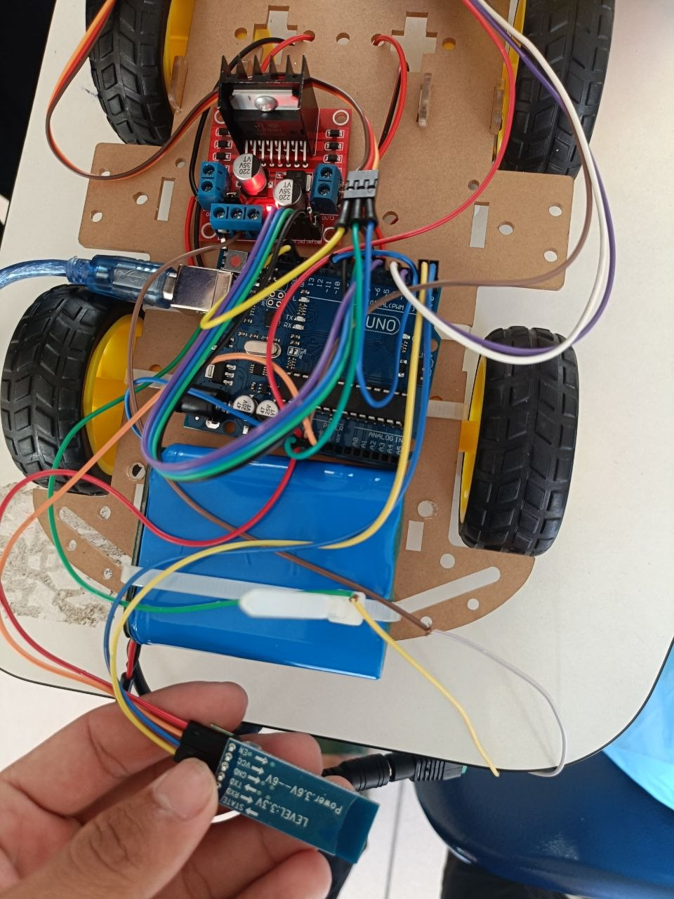
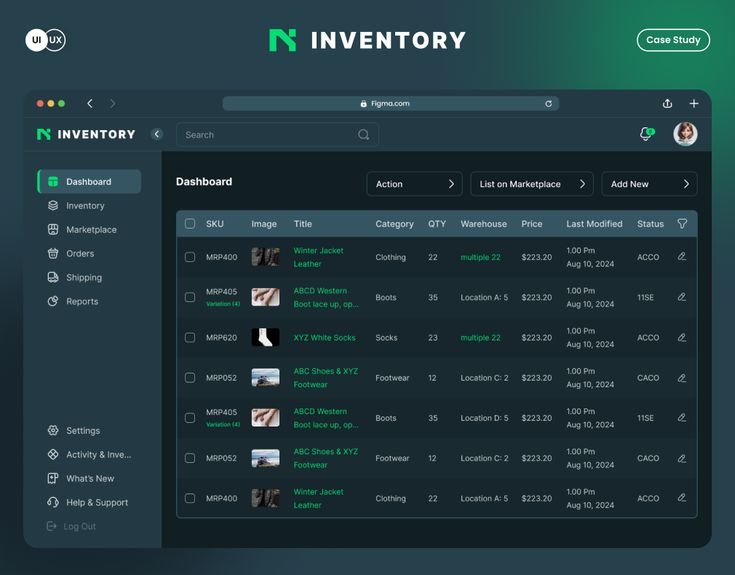

ខ្ញុំជានិស្សិតផ្នែកវិទ្យាសាស្ត្រកុំព្យូទ័រ (Computer Science) នៃសាកលវិទ្យាល័យភូមិន្ទភ្នំពេញ ដែលមានចំណង់ចំណូលចិត្តខ្លាំងលើផ្នែក Web Development, Software Engineering, និង IoT។ ខ្ញុំមានបទពិសោធន៍ក្នុងការសរសេរកូដ C++, Java, Python, Web (HTML/CSS/JS) ព្រមទាំងការគ្រប់គ្រង Database (SQL) និងប្រព័ន្ធ Networking
| Project 1 | Description of Projects |
|---|---|
|
 |
ជាប្រព័ន្ធ Hardware និង IoT ដែលបង្កើតឡើងដោយប្រើប្រាស់ Microcontroller (Arduino Mega 2560 & Uno)។ គម្រោងនេះរួមបញ្ចូលនូវឡានបញ្ជា (RC Car) ដែលអាចបញ្ជាតាម Bluetooth (HC-05) មានប្រព័ន្ធគេចឧបសគ្គដោយប្រើ Ultrasonic Sensor, L298N Motor Driver និង SG90 Servo Motor ព្រមទាំងមានប្រព័ន្ធភ្លើងចរាចរណ៍គំរូ (Traffic Light Control) សម្រាប់ត្រួតពិនិត្យការធ្វើចរាចរណ៍ដោយស្វ័យប្រវត្តិ |
| Project 2 | |
|
 |
ជាកម្មវិធីគ្រប់គ្រងស្តុកសៀវភៅនៅលើ Desktop (Windows App) ដែលអភិវឌ្ឍឡើងដោយប្រើប្រាស់ C# Windows Forms គួបផ្សំជាមួយប្រព័ន្ធទិន្នន័យ Microsoft SQL Server Management Studio។ កម្មវិធីនេះត្រូវ បានបង្កើតឡើងដើម្បីជួយសម្រួលដល់ហាងលក់សៀវភៅក្នុងការត្រួតពិនិត្យ និងគ្រប់គ្រងចំនួនស្តុក ផ្ទៀងផ្ទាត់ការទិញ-លក់ (Sales Transactions) បញ្ចូលសៀវភៅថ្មីៗ និងទាញយករបាយការណ៍ទិន្នន័យបានយ៉ាងរហ័ស និងមានប្រសិទ្ធភាព |
| Project 3 | |
|
ជា Web Application សម្រាប់គ្រប់គ្រងព័ត៌មាននិស្សិត ការចុះឈ្មោះមុខវិជ្ជាសិក្សា និងតាមដានលទ្ធផលប្រឡង។ ត្រូវបានអភិវឌ្ឍឡើងដោយប្រើប្រាស់ HTML/CSS, JavaScript, Node.js/Express.js គួបផ្សំជាមួយប្រព័ន្ធទិន្នន័យ SQL ដើម្បីធានាសុវត្ថិភាពទិន្នន័យ និងភាពងាយស្រួលក្នុងការទាញយកព័ត៌មានសិក្សា។ |